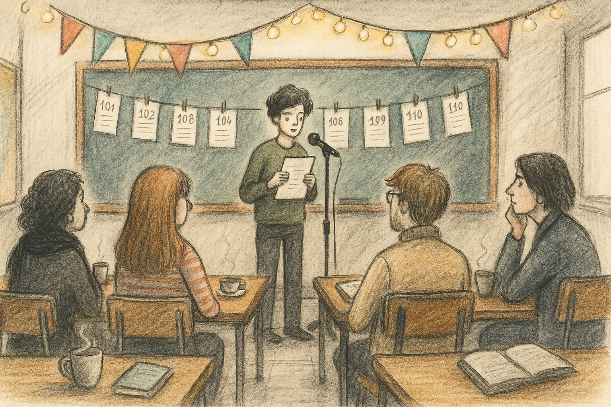
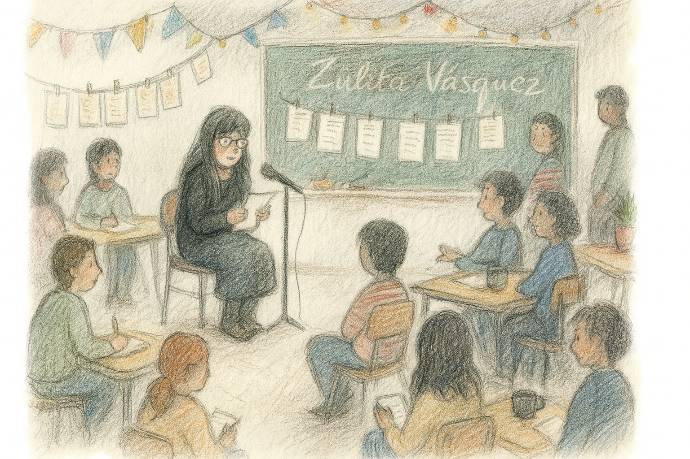

🕒 Bloque único (90 minutos) – Festival poético en el aula
Objetivo: Compartir las creaciones poéticas de los estudiantes en un ambiente de respeto, sensibilidad y celebración de la palabra, favoreciendo la expresión identitaria y el reconocimiento del trabajo de sus pares.
Duración total: 90 minutos

✨ Ambientación del aula
El docente, junto con los estudiantes, prepara el aula para transformarla en un espacio poético:
Se pueden juntar mesas y sillas para formar círculos o rincones íntimos de lectura.
Decorar con banderines, luces suaves, tazas con té o café, libros abiertos, elementos visuales que evoquen la escritura y la poesía.
Se sugiere ambientar con música instrumental de fondo, que ayude a generar una atmósfera cálida, atenta y respetuosa.
📜 Lectura de los textos
Cada estudiante decide libremente si desea leer su poema en voz alta o dejarlo colgado, como en la primera etapa, sin nombre o con seudónimo.
Se sugiere disponer un pequeño espacio escénico simbólico, con un micrófono de utilería o una silla especial, donde cada participante se ubique para leer su creación.
Durante la lectura, se enfatiza el respeto, la escucha empática y el aplauso como forma de reconocimiento.
Además de los textos poéticos, se sugiere montar en el aula los dibujos, ilustraciones o fotografías realizadas por los y las estudiantes durante el proceso de escritura personal. Estas creaciones visuales pueden exhibirse en un mural, colgadas junto a los poemas, o proyectadas durante el recital, como una forma de enriquecer la experiencia estética y dar valor al trabajo artístico integral. Esta exposición fomenta la diversidad de lenguajes expresivos y permite que cada estudiante comparta su sensibilidad desde múltiples formas de creación.
Cierre y reflexión
Al finalizar el festival, se puede realizar un breve plenario con preguntas como:
¿Cómo se sintieron al compartir su escritura?
¿Qué descubrieron de sí mismos o de sus compañeros a través de la poesía?
¿Qué aprendieron de este proceso?
📬 Invitación especial

Si tu escuela o comunidad educativa desea invitar a la escritora Zuleta Vásquez para realizar una visita, conversar con los estudiantes o participar en un festival poético presencial o virtual, puedes contactarla directamente:
📧 Correo electrónico: zuletavasquez99@gmail.com
📞 Teléfono de contacto: +56 9 6839 5184
Zuleta Vásquez (1979), escritora.